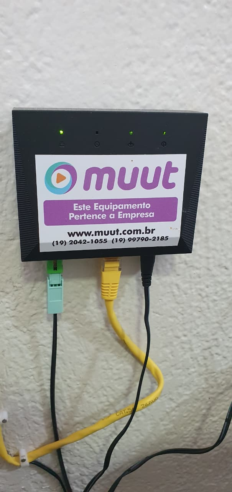
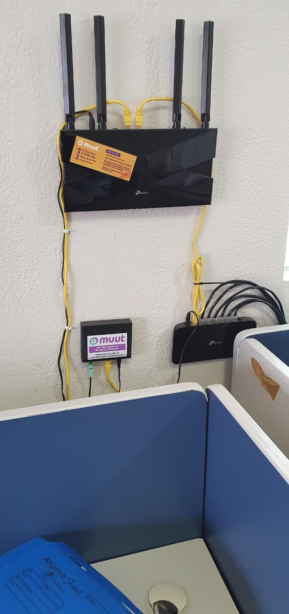
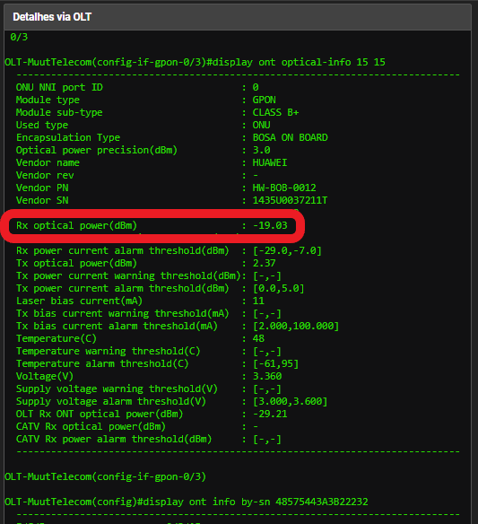
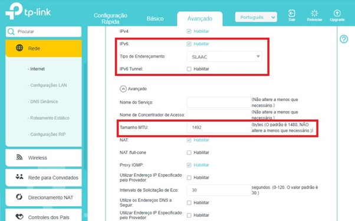
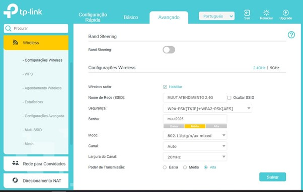
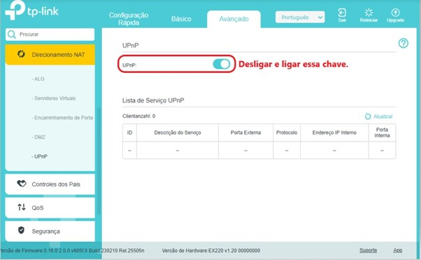

🚀 Script Automatizado de Suporte Técnico
Clique no problema do cliente para ver a resposta pronta
📴 Cliente Sem Conexão de Internet
1º PASSO: "Para identificar o problema, preciso que você envie fotos da ONU (caixinha da internet) e do roteador, mostrando as luzes e os cabos conectados. Pode ser por WhatsApp mesmo."
Análise das Luzes da ONU:
- Todas apagadas: Equipamento fora da tomada ou fonte queimada. Pedir para conferir a fonte de energia.
- LOS acesa: Sem sinal na fibra. Possível rompimento de cabo ou conector quebrado.
- LAN apagada: Cabo de rede desconectado. Verificar ambas as pontas.
- PON piscando: Equipamento não autenticado. Pode ter ocorrido reset.
- POWER + PON acesas: Funcionamento normal. Confirmar tráfego de internet.



📈 Cliente Relatando Oscilações
Primeiro: Verificar o sinal da ONU, consultar extrato de tráfego na OLT para verificar quedas reais.
Se sinais normais, perguntar: "Você percebe essa oscilação usando qual dispositivo? Na TV, no celular, ou em algum aplicativo específico?"
- Celular: Verificar distância do roteador e barreiras (paredes).
- TV com apps oficiais (Netflix, etc.): Verificar Wi-Fi vs cabo. Sugerir cabeamento.
- TV Box/apps ilegais: "Identificamos que o problema está em aplicativos de liberação de canais. Esses serviços são não oficiais e não garantimos o funcionamento."


🐌 Cliente com Lentidão
Iniciar: "Para te ajudar melhor com essa lentidão, preciso entender como você está usando a internet. Está lento em quais dispositivos ou aplicativos? TV, celular ou outro?"
- TV: Verificar app (oficial vs TV Box). Recomendar cabo de rede.
- Celular: "Qual a distância do celular até o roteador? Qual rede está conectada? 2.4G ou 5G?"
- Configurações recomendadas: MTU 1492, IPv6 desabilitado, Wi-Fi 2.4G (20MHz), Habilitar o ping, limpeza de log e MTU
- Finalizar: Reiniciar ONU + Roteador (desligar 3-5min).





💡 Análise Completa das Luzes
- ONU: PON acesa/fixa + POWER sempre acesa + LAN piscando (atividade)
- Roteador: POWER acesa, Globo Internet VERDE, Wi-Fi acesa
- LEDs EX141/AX1500: Branca=OK, Azul=ONU sem conexão, Verde=precisa config, Vermelha=hardware
🔌 Verificação de Cabos
- Fibra ótica: Conector verde/azul bem inserido na ONU. Não dobrado.
- Patch cord: ONU(LAN) → Roteador(WAN AZUL). Clique nas duas pontas.
⚙️ Configurações Otimizadas Roteador
- MTU: 1492
- IPv6: DESABILITAR
- Wi-Fi 2.4G: 20MHz, Canal Automático
- Wi-Fi 5G: Automático
- Limpar UPNP + Logs + Habilitar PING
📷 [INSERIR IMAGENS: Todas as telas de configuração]